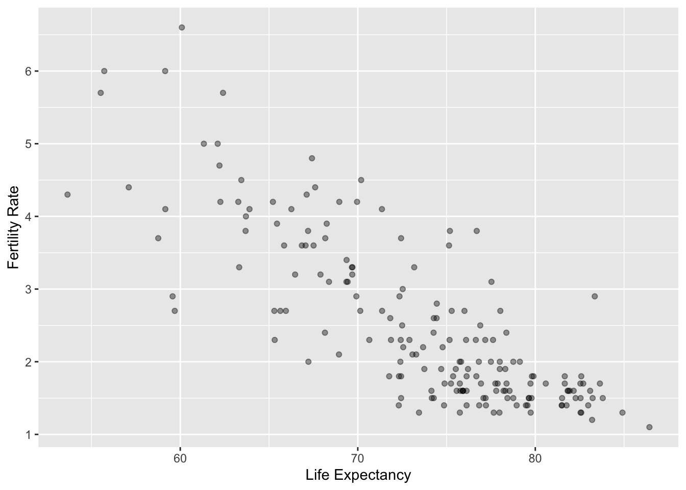
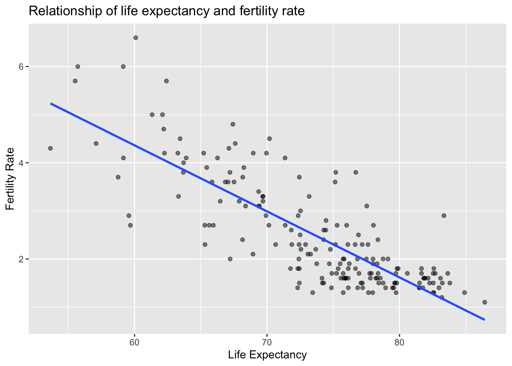
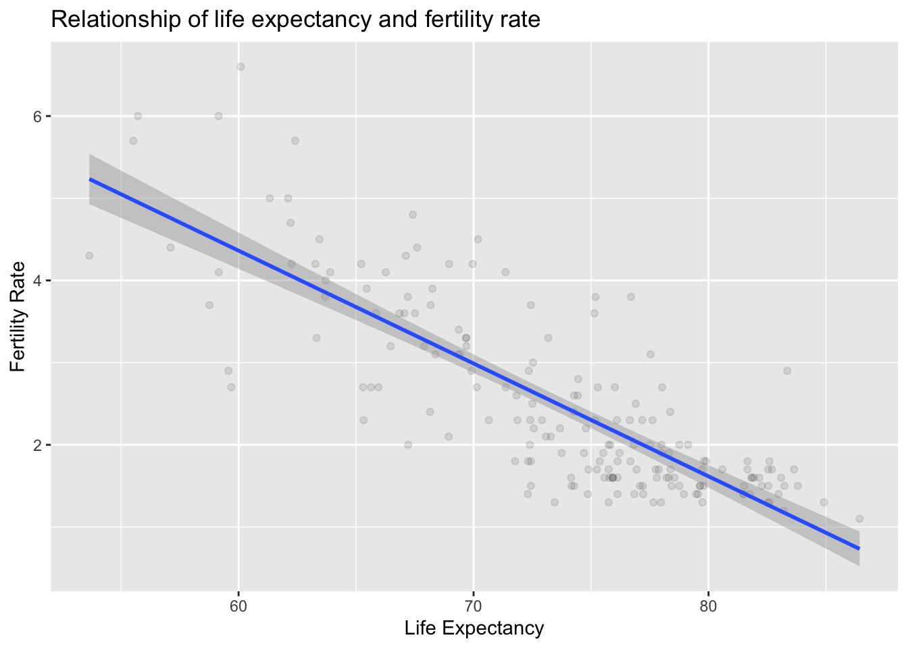
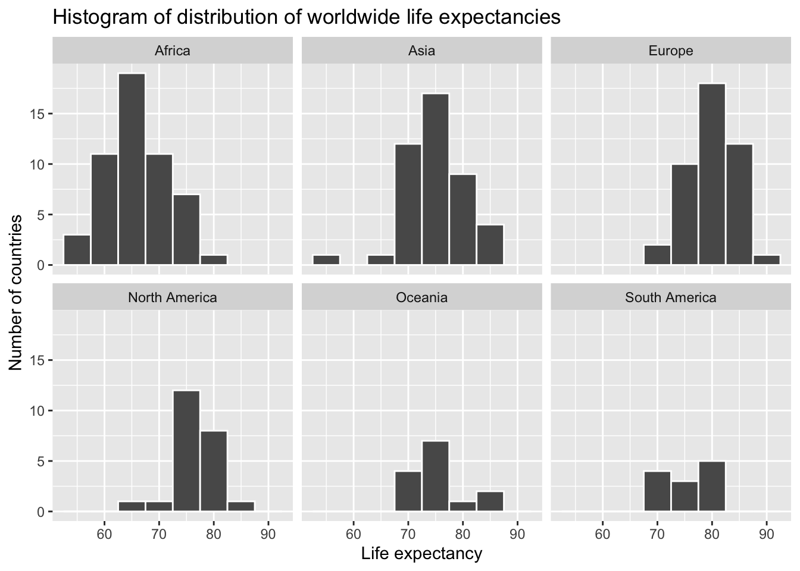
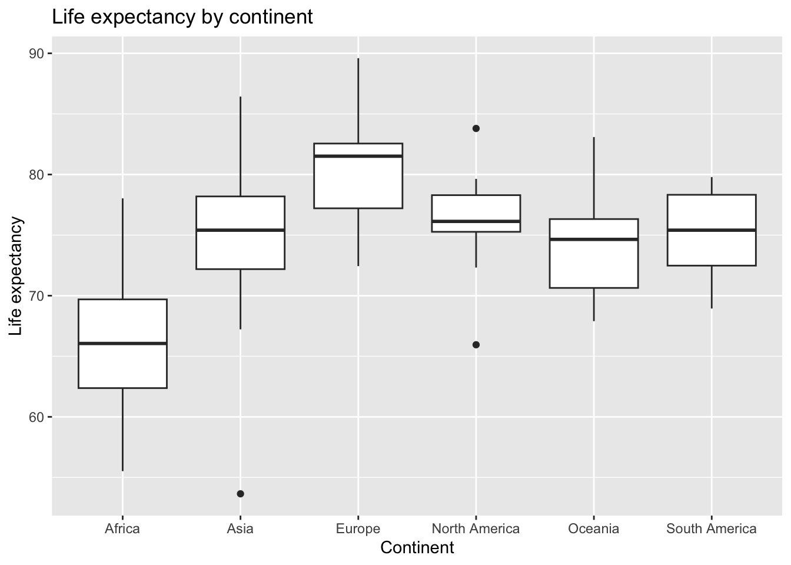
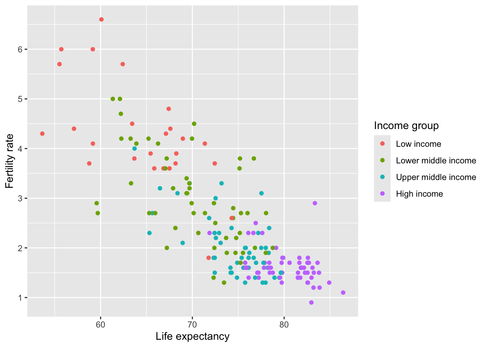
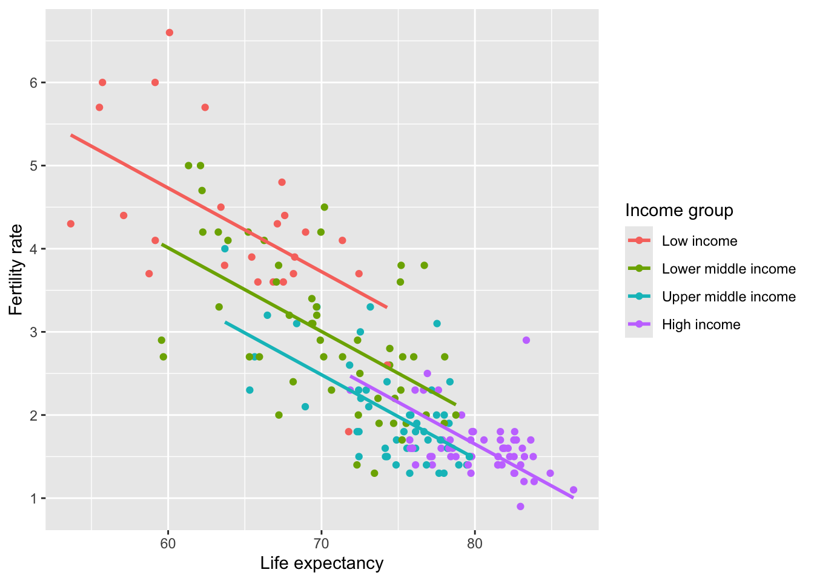
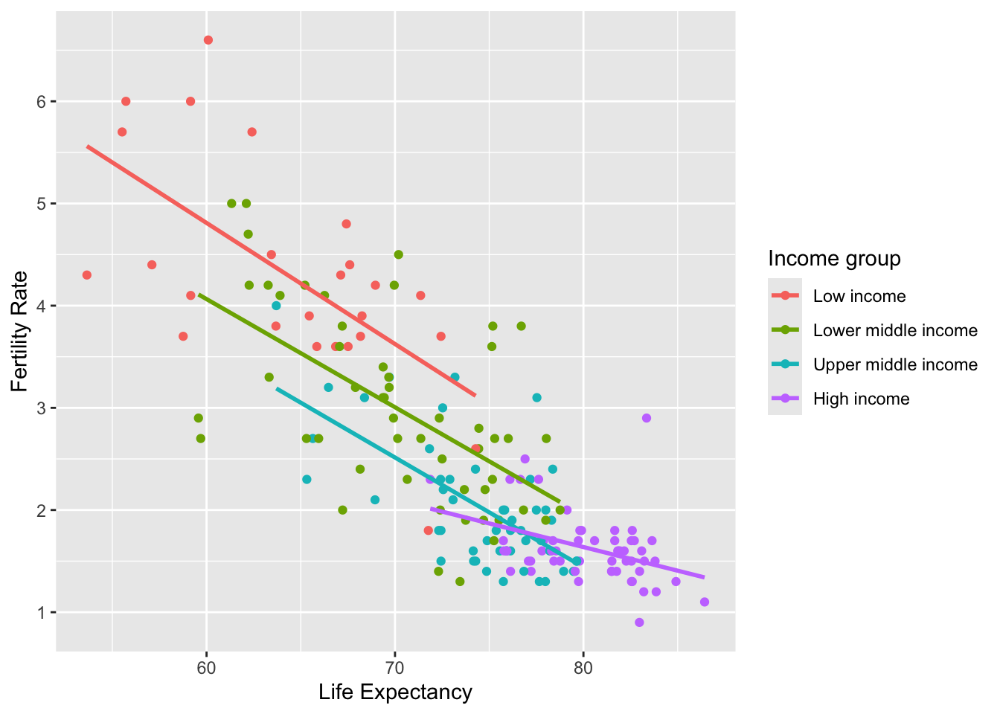

── Attaching core tidyverse packages ──────────────────────── tidyverse 2.0.0 ──
✔ dplyr 1.2.1 ✔ readr 2.2.0
✔ forcats 1.0.1 ✔ stringr 1.6.0
✔ ggplot2 4.0.3 ✔ tibble 3.3.1
✔ lubridate 1.9.5 ✔ tidyr 1.3.2
✔ purrr 1.2.2
── Conflicts ────────────────────────────────────────── tidyverse_conflicts() ──
✖ dplyr::filter() masks stats::filter()
✖ dplyr::lag() masks stats::lag()
ℹ Use the conflicted package (<http://conflicted.r-lib.org/>) to force all conflicts to become errors
library(moderndive)
moderndive's `View()` renders a DT::datatable() inline here instead of erroring like `utils::View()`.
Attaching package: 'moderndive'
The following object is masked from 'package:utils':
View
ggplot(UN_data_ch5, aes(x = life_exp, y = fert_rate)) +geom_point(alpha =0.4) +labs(x ="Life Expectancy", y ="Fertility Rate")

What would a ‘best fit’ line through this look like?
ggplot(UN_data_ch5, aes(x = life_exp, y = fert_rate)) +geom_point(alpha =0.5) +labs(x ="Life Expectancy", y ="Fertility Rate",title ="Relationship of life expectancy and fertility rate") +geom_smooth(method ="lm", se =FALSE)
`geom_smooth()` using formula = 'y ~ x'

What would a ‘best fit’ line through this look like?
ggplot(UN_data_ch5, aes(x = life_exp, y = fert_rate)) +geom_point(alpha =0.1) +labs(x ="Life Expectancy", y ="Fertility Rate",title ="Relationship of life expectancy and fertility rate") +geom_smooth(method ="lm", se =TRUE)
`geom_smooth()` using formula = 'y ~ x'

Your first linear regression model
# Fit regression model:demographics_model <-lm(fert_rate ~ life_exp, data = UN_data_ch5)# Get regression coefficientscoef(demographics_model)
(Intercept) life_exp
12.5992926 -0.1372879
Your first linear regression model
ggplot(UN_data_ch5, aes(x = life_exp, y = fert_rate)) +geom_point(alpha =0.5) +labs(x ="Life Expectancy", y ="Fertility Rate",title ="Relationship of life expectancy and fertility rate") +geom_smooth(method ="lm", se =FALSE)
`geom_smooth()` using formula = 'y ~ x'
Your first linear regression model
For every increase of 1 unit in life_exp, there is an associated decrease of, on average, 0.137 units of fert_rate.
“associated”
“on average”
Your first linear regression model
Because you might have two countries whose life_exp values differ by 1 unit, but their difference in fertility rates may not be exactly
Across all possible countries, the average difference in fertility rate between two countries whose life expectancies differ by one is 0.137
ggplot(gapminder2022, aes(x = life_exp)) +geom_histogram(binwidth =5, color ="white") +labs(x ="Life expectancy", y ="Number of countries",title ="Histogram of distribution of worldwide life expectancies") +facet_wrap(~ continent, nrow =2)

Explore Data
ggplot(gapminder2022, aes(x = continent, y = life_exp)) +geom_boxplot() +labs(x ="Continent", y ="Life expectancy",title ="Life expectancy by continent")

Categorize by Continent
life_exp_by_continent <- gapminder2022 |>group_by(continent) |>summarize(median =median(life_exp), mean =mean(life_exp))life_exp_by_continent
# A tibble: 6 × 3
continent median mean
<fct> <dbl> <dbl>
1 Africa 66.1 66.3
2 Asia 75.4 74.9
3 Europe 81.5 79.9
4 North America 76.1 76.3
5 Oceania 74.6 74.4
6 South America 75.4 75.2
# A tibble: 6 × 4
continent median mean diff_africa
<fct> <dbl> <dbl> <dbl>
1 Africa 66.1 66.3 0
2 Asia 75.4 74.9 8.64
3 Europe 81.5 79.9 13.6
4 North America 76.1 76.3 9.99
5 Oceania 74.6 74.4 8.11
6 South America 75.4 75.2 8.92
Can we fit a best fit line here?
ggplot(gapminder2022, aes(x = continent, y = life_exp)) +geom_boxplot() +labs(x ="Continent", y ="Life expectancy",title ="Life expectancy by continent")
Linear Regression
Dummy/Indicator variables
life_exp_model <-lm(life_exp ~ continent, data = gapminder2022)coef(life_exp_model)
(Intercept) continentAsia continentEurope
66.309808 8.639965 13.597867
continentNorth America continentOceania continentSouth America
9.985410 8.106621 8.917692
ggplot(UN_data_ch6, aes(x = life_exp, y = fert_rate, color = income)) +geom_point() +labs(x ="Life expectancy", y ="Fertility rate", color ="Income group")

Controlling for income
model_no_int <-lm(fert_rate ~ life_exp + income, data = UN_data_ch6)# Get the coefficients of the modelcoef(model_no_int)
(Intercept) life_exp incomeLower middle income
10.7676024 -0.1006323 -0.7186537
incomeUpper middle income incomeHigh income
-1.2393433 -1.0666572
Interpretation
Assuming that this model is correct, for any UN member state, every additional year of life expectancy reduces the average fertility rate by 0.101 units, regardless of the income level of the member state.
Assumption - Parallel slopes
ggplot(UN_data_ch6, aes(x = life_exp, y = fert_rate, color = income)) +geom_point() +labs(x ="Life expectancy", y ="Fertility rate", color ="Income group") +geom_parallel_slopes(se =FALSE)

Assumption - Varying slopes
ggplot(UN_data_ch6, aes(x = life_exp, y = fert_rate, color = income)) +geom_point() +labs(x ="Life Expectancy", y ="Fertility Rate", color ="Income group") +geom_smooth(method ="lm", se =FALSE)
`geom_smooth()` using formula = 'y ~ x'

Interacting with income
model_int <-lm(fert_rate ~ life_exp * income, data = UN_data_ch6)coef(model_int)
(Intercept) life_exp
11.91826460 -0.11848075
incomeLower middle income incomeUpper middle income
-1.50420617 -1.89291757
incomeHigh income life_exp:incomeLower middle income
-6.57953685 0.01265027
life_exp:incomeUpper middle income life_exp:incomeHigh income
0.01117481 0.07221696